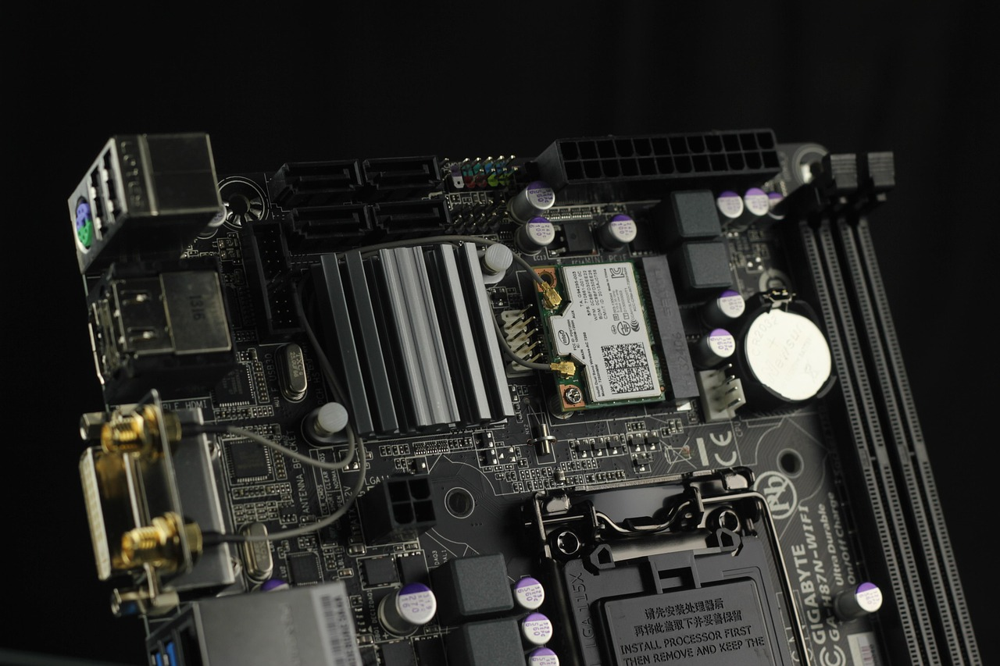

Saras, AI 가속기 전력용 기판 내장 커패시터 출시

반도체 전문 매체 세미컨덕터 다이제스트(Semiconductor Digest)에 따르면 미국 사라스 마이크로디바이시스가 AI 가속기 전력 공급용 기판 내장형 커패시터 신제품을 공개하고 2mm 크기 부품의 샘플 출하를 개시했다. 이 제품은 PCB(인쇄회로기판) 또는 패키지 코어 내부에 직접 내장되도록 설계됐다.
이 커패시터의 핵심 기능은 AI 칩이 요구하는 수직형 전력 전달(Vertical Power Delivery) 구조를 지원하는 것이다. AI 가속기는 연산 집중도가 극히 높아 순간적으로 수백 암페어의 대전류가 필요하며, 전원 공급 경로가 길수록 전압 강하와 전력 손실이 커지는 구조적 문제를 안고 있다.
기존 보드 표면 장착 방식과 달리, 기판 내장형 커패시터는 칩 바로 아래 또는 패키지 내부에 배치해 전원 공급 경로를 물리적으로 최소화한다. 이를 통해 전압 과도 응답 특성을 개선하고 AI 칩의 동작 안정성과 전력 변환 효율을 동시에 높일 수 있다는 것이 사라스 마이크로디바이시스의 설명이다.
AI 반도체 업계에서 전력 전달 문제는 이미 핵심 설계 과제로 부상했다. AI 가속기 칩 하나가 소비하는 전력이 수백 와트에 달하는 가운데, 기존 평면형 전력 공급 방식으로는 전력 밀도 증가를 감당하기 어렵다는 한계가 지속적으로 지적돼 왔다.
EE타임스(EE Times)가 보도한 OCP 서밋 2026에서도 데이터센터 전력 전달 기술이 핵심 의제로 다뤄졌다. 전력 전달 보드, PSU 설계, 핫스왑 컨트롤러, 이벤트 기반 텔레메트리 등이 집중 소개되며 AI 인프라의 전력 효율이 반도체 소재·패키징 설계의 새로운 경쟁 축으로 자리잡았음을 재확인했다.
세미콘 웨스트 2026(SEMICON West 2026)에서도 AI 시대 칩 제조 트렌드로 전력 효율과 첨단 패키징 혁신이 강조됐다. EE타임스에 따르면 행사 전반에서 반도체 업계가 AI 수요에 맞춰 팹 인프라를 어떻게 재편할지가 주된 논의 주제였으며, 수직형 전력 공급 아키텍처는 선진 패키징 기술과 결합된 복합 소재 솔루션으로 주목받았다.
기판 내장형 커패시터 구현에는 고온 소성에 견디는 고유전율 세라믹 소재와 극박 유전체 필름 기술이 핵심이다. 내장 공정에서 PCB 기판의 열팽창 계수(CTE)와 커패시터 소재의 CTE를 정밀하게 맞춰야 하며, 층간 결합 신뢰성을 확보하는 소재 기술이 제품 수율과 직결되는 관건으로 꼽힌다.
세미위키(SemiWiki)가 분석한 테라팹(Terafab) 사례에서도 확인되듯, 반도체 산업의 경쟁력 축이 리소그래피(노광)에서 패키징으로 이동하는 흐름이 뚜렷해지고 있다. 테라팹은 168억 달러를 투입한 1단계 연구 팹에서 공정 배합·트랜지스터 설계·패키징 변형을 동시에 실험하는 전략을 채택했다.
AI 가속기 시장에서 엔비디아 블랙웰, AMD MI300, 인텔 가우디 등이 경쟁하며 전력 소비와 열관리 사양이 매 세대 급격히 높아지고 있다. 이에 따라 전력 전달 경로를 물리적으로 단축하는 기판 내장형 수동소자 소재 시장의 성장세가 빨라질 것이라는 관측이 반도체 소재 업계에서 제기되고 있다.
국내에서도 반도체 기판 및 MLCC 소재 분야 기업들이 기판 내장형 수동소자 기술 개발에 관심을 높이고 있다. 고성능 AI 반도체의 전력 효율 경쟁이 심화될수록 FCB(기능성 코어 기판) 및 패키지 기판 소재의 고도화가 필수적이며, 소재 기술 격차 해소가 시급한 과제로 부각되는 상황이다.
사라스 마이크로디바이시스가 공개한 2mm 제품은 현재 샘플 단계이며, 본격 양산과 공급망 편입까지는 추가 신뢰성 검증이 필요하다. 그러나 AI 반도체 공급망의 관심 축이 칩 설계에서 전력 전달·패키징·소재 복합 솔루션으로 이동하는 흐름 속에서 기판 내장형 커패시터 소재는 차세대 반도체 소재 수요의 새로운 방향을 예고하고 있다.